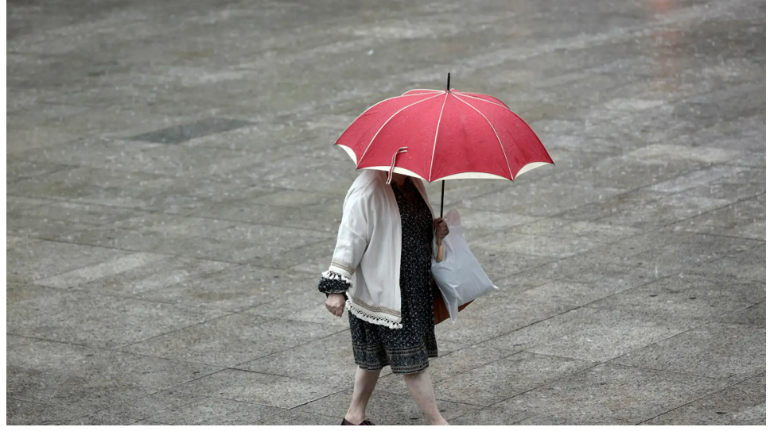

Las provincias en las que más va a llover en los próximos días
Durante las últimas 24 horas se han registrado precipitaciones ocasionalmente tormentosas e intensas en los litorales y prelitorales de las provincias de Valencia, Castellón y Tarragona, donde se han acumulado cantidades de lluvia muy importantes. A su vez, también ha llovido, aunque con menor intensidad, en el resto de Cataluña, en Pirineos, Baleares y en el litoral Sur. En lo que respecta a las temperaturas, Bañón ha señalado que las mínimas han bajado de los 10ºC en la meseta norte y en otras zonas de la mitad norte peninsular, pero no han descendido de los 20ºC en el litoral del extremo sur peninsular, en Baleares y Canarias. Además, ha soplado viento fuerte en puntos de Baleares, Barcelona y A Coruña.